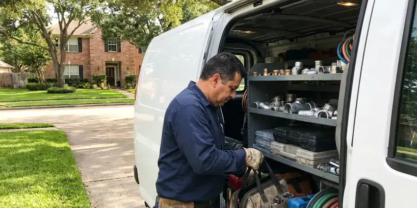

Clogged Drain Repair in Toledo, OH
Clogged drains in Toledo, OH cleared by licensed plumbers using cables and jetters. We skip the harsh chemicals.
- Cables and Jetters Matched to the Line
- Every Drain Tested Before We Leave
- Floors and Cabinets Covered
- Kitchen Sink, Bath and Laundry Lines
Plunger Not Working in Toledo, OH?
Our vans carry cables, augers and a small jetter for every size of drain.
Licensed Drain Clearing for Toledo, OH Homes
HRL Plumbing handles clogs in kitchens, bathrooms, laundry rooms, garages and basements across Toledo. Each one clogs differently. Kitchens get grease and food, showers get hair and soap scum, and laundry lines fill with lint that packs tight in the standpipe.
Some of what we do:
- Drum augers and sectional cables sized to the pipe
- Compact hydro jetting for grease and scale
- Toilet clearing with a closet auger

Additional Plumbing Maintenance Services in Toledo, OH
Our maintenance and specialty plumbing services in Toledo, OH catch small problems before they become emergencies.


Customers
Why Choose HRL Plumbing for Clogged Drain Repair in Toledo, OH?
The first question we ask is what went down the drain. That decides the approach. Grease needs scouring, hair needs a grabbing head that pulls the mass out instead of punching a hole through it, and scale needs a jetter or a descaling chain.
- After-Hours Help, Evening and weekend calls are taken for backups that cannot wait.
- Right Cable, We match the cable size and cutter head to the pipe diameter and material.
- No Chemicals, Clogs get cleared mechanically, with no caustic products poured in.
Citywide Coverage
We clear drains in every part of Toledo, from older homes with cast iron under the slab to new builds plumbed in ABS. The tools differ. Our vans carry machines for small sink lines and larger laundry and floor drains, so a single visit covers whatever we find once the trap comes off.
Experienced Team
Each drain tech carries a small camera on the van. It comes out on repeat calls. When a line keeps clogging, they can show you the sag, crack or root right on the screen instead of describing it.
Safety-First Approach
Jetters run at high pressure. We respect that. Only trained techs run the jetter, and we keep people and pets well back from the cleanout while it is running.
Trusted Certified Toledo Plumbing Services Professionals
At HRL Plumbing, we take pride in licensed, certified plumbing services throughout Toledo, OH. Credentials matter in this trade. Our plumbers hold recognized industry credentials, and they follow strict safety and quality rules on every repair, installation and maintenance call we run.
Call Us Now PHCC Plumbing Contractor Recognition
PHCC Plumbing Contractor Recognition Better Business Bureau (BBB) Accreditation
Better Business Bureau (BBB) Accreditation Angi Certified Pro
Angi Certified Pro ISO 9001 Quality Management Certification
ISO 9001 Quality Management CertificationSink, Tub, Laundry and Floor Drain Clearing in Toledo, OH
Main Sewer Line Clog Clearing in Toledo, OH
Several drains backing up at once usually means the clog is in the main. That is a bigger job. We find the cleanout, relieve the pressure slowly and then run a large cable with a cutting head. We camera the line once it flows.

Emergency Clogged Drain Service in Toledo
Backups seem to happen right before guests arrive. It never fails. Our emergency technicians come with full drain equipment, and we check the main first if more than one fixture is affected. Hold off on flushing until we arrive.
Hydro-Jetting Services in Toledo, OH
A jetter pushes water at thousands of psi through a nozzle that sprays backward and pulls itself down the pipe. It scours the whole wall. Cables punch a hole through a clog, but a jetter washes away the grease, scale and soft roots that cause the next clog to form. It works best on lines that clog again and again.
Recurring Drain Clogs and Camera Diagnosis in Toledo, OH
The same drain clogging every few weeks is a pipe problem, not bad luck. There is a reason it keeps happening. We run a small inspection camera through the line, and you watch the screen with us as it passes sags, broken fittings, scale or roots coming through a joint. The choice is yours from there. A deeper cleaning, a spot repair or a new section are the usual options.
Emergency Drain Clog Service in Toledo, OH
Some backups cannot wait for Monday. Sewage on the floor is one. HRL Plumbing answers after hours in Toledo, OH and sends a tech with full drain equipment, so the clog gets cleared on the first visit instead of patched until a second truck arrives. Shut off the water to that fixture if you can.
Toilet Clog Repair in Toledo
A toilet clog usually sits in the trapway, the S-shaped channel inside the bowl. A plunger does not always reach. We use a closet auger with a rubber sleeve, which reaches through the trapway and pulls out the blockage without scratching the porcelain. Toys and wipes come out this way. If the auger finds nothing, the clog is past the toilet and we check the main.
Bathroom Sink and Vanity Drain Clogs in Toledo, OH
Vanity drains clog at the pop-up stopper first. The pivot rod catches hair. We pull and clean the stopper, clear the trap and run a small cable through the wall line, and we can replace a worn pop-up assembly or corroded tailpiece during the same visit. Scale buildup is common there.

Commercial Clogged Drain Solutions in Toledo, OH
Businesses in Toledo, OH cannot close a restroom for a day. So we work fast. HRL Plumbing clears salon sinks packed with hair, grease-choked prep sinks and floor drains in commercial kitchens and the restroom lines in busy offices, often during off hours. We can also set up a jetting schedule that matches how fast your lines build up.
Local Clogged Drain Clearing in Toledo, OH
Being local means we come back. Repeat clogs get the same tech. If a drain we cleared clogs again within the guarantee period, we come back free or apply the cost toward fixing the cause.
Close by matters on a drain call. Backups do not wait. HRL Plumbing runs vans across Toledo, OH loaded with drum machines, cables and a jetter, so one visit is usually enough.
HRL Plumbing at a Glance
- Licensed and insured plumbers serving Toledo, OH
- Same-day appointments and 24/7 emergency response
- Upfront, flat-rate pricing before work begins
- 4.9-star rated by 673+ Ohio customers
Toledo Map
Toledo Information
- Population
- 265,304
- Area codes
- 419/567/330
- Service area
- Toledo and communities within 40 miles
- Nearby
- Lorain, Elyria, Mansfield, Lakewood
Much of Ohio has hard water, which leaves scale in water heaters, clogs aerators and shortens the life of appliances. Mineral crust inside the pipe catches hair and grease, so drains in Toledo, OH tend to clog again unless the line is cleared all the way down.
Talk to a Plumber
Reach out to HRL Plumbing for honest, reliable plumbing from people who know the trade in Toledo, OH.
Our Specialized Plumbing Services in Toledo, OH
At HRL Plumbing, we handle the full list of plumbing services across Toledo, OH. From leak detection to full system installs, our team works fast and charges fair prices on homes and commercial properties alike. Take a look at our core services below:


From Backed Up to Draining in Toledo, OH
Expect a few questions, a price, the clearing and a water test before we leave.
Call Us
Call HRL Plumbing at (740) 449-7505 and tell us which drain is stopped. We will ask what you have tried.
Find the Clog
The tech checks which fixtures are slow and finds where the blockage sits. You get a price before any work.
Clear and Test
We clear the line with the right cable or jetter. Then we run water to prove it is open.
Frequently Asked Questions About Clogged Drain Repair in Toledo
A standard clog in one fixture usually runs $150 to $500. Access changes the price. Main line clogs that need a camera inspection or hydro jetting often land between $400 and $1,000 depending on the line. You get a clear price after we look at it.
Enzyme cleaners can help. They are gentle. Used regularly, they break down the organic buildup in kitchen and bath drains that would otherwise thicken into a clog over a few months. They will not clear a full clog, though.
RIDGID drain machines and cameras do most of the work. We trust them. Our jetters are sized for residential and light commercial lines, with nozzles for grease, roots and general cleaning that we swap depending on what the camera shows. Every machine is serviced on a schedule.
Under two hours for most household clogs. Often under one. Severe blockages in the main that need a camera and jetting can take a few hours or most of a day if the cleanout is hard to reach or buried. We tell you up front if a job will run long.
Most sink and tub clogs take one to two hours. Some take 30 minutes. Main line clogs that need a camera inspection and jetting may take three to four hours depending on the line. We give you a time estimate before we start.
Yes, a limited workmanship guarantee. It covers a set period. If the same drain clogs again within that time, we come back at no charge or apply what you paid toward a repair of the underlying problem. Details are on the invoice.
We do. Our drain work is guaranteed. If the same drain clogs again within the guarantee period, we come back at no charge or apply what you paid toward a camera inspection or repair. The terms are written on your invoice.
Keep grease out of the kitchen sink. Wipe pans with a paper towel first. Use a hair catcher in showers and tubs, flush only toilet paper and run hot water for a minute after using the disposal to carry food down to the main. Scheduled cleaning helps lines that build up fast.
What People Are Saying About Our Plumbing Experts?

Monica A.
Our water bill nearly doubled in one month with no change in how we used water. The tech checked the meter, heard the leak under the hallway with his equipment, and opened a hole about a foot square. Fixed the same day.
Slab Leak Repair · Parma, OH
Greg S.
I manage a small strip center with six tenants. HRL Plumbing handles our annual backflow testing and fixed a recurring clog in the shared sewer line that had been backing into the nail salon. Their reports come in clean and on time.
Commercial Plumbing · Cleveland, OHBrian W.
I smelled gas behind the dryer and called right away. The plumber found a corroded flex connector, replaced it, and pressure tested the whole line before turning the gas back on. He let me watch the gauge hold steady for fifteen minutes.
Gas Line Repair · Cleveland, OH
Tyler J.
We bought a taller comfort height toilet for my dad, who just had knee surgery. The plumber pulled the old one, found the flange was cracked, and replaced it before setting the new bowl. Took about two hours.
Toilet Installation · Parma, OHJessica T.
We were adding a gas range in a kitchen remodel and needed a new line run from the meter. The plumber pulled the permit, ran the pipe through the crawl space, and had it inspected and approved within the week.
Gas Line Repair · Lorain, OHSofia M.
Two new toilets went in during one visit. The tech set them on new wax rings and swapped the old supply lines. He also noticed our bathroom faucet dripping and replaced the cartridge while he was there. No mess left behind.
Toilet Installation · Elyria, OH